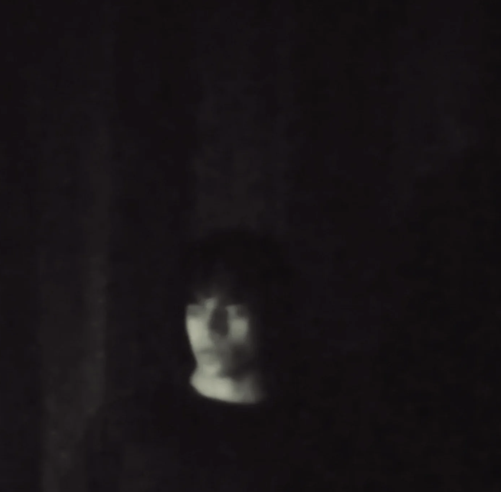
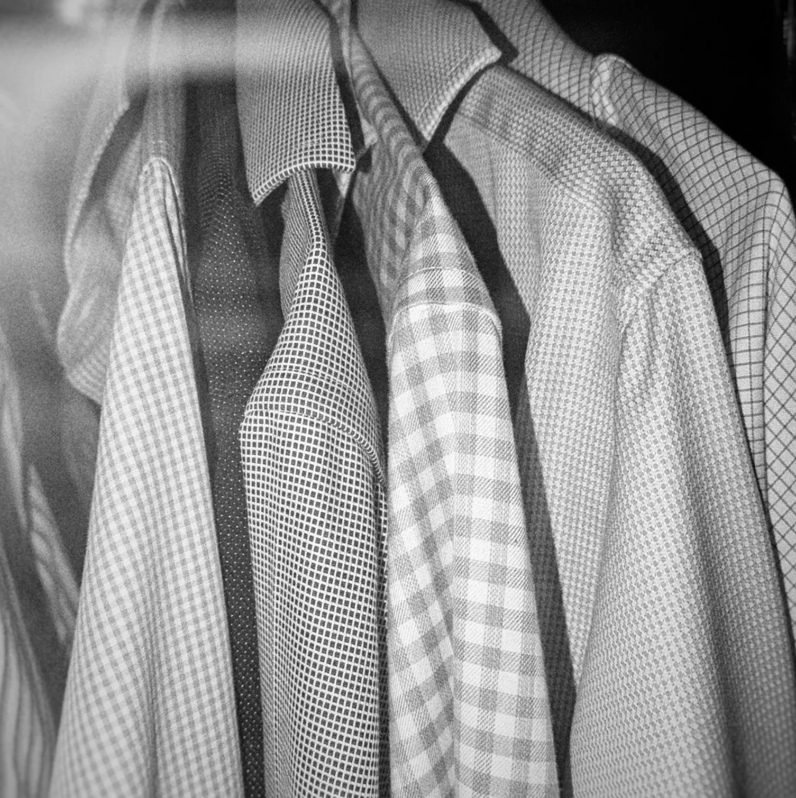

My Art & Album
cat about_me.txt
Hello, I'm Anan (or Ananthajith— Sanskrit for 'infinite victories and happiness').
I'm currently in my penultimate year studying Biomedical Science (Hons) at the University of Edinburgh. I am deeply passionate about the intersection of science and technology, and how we can leverage both to make a tangible difference globally.
With a keen interest in research, I am actively building my knowledge and skills through personal, work, and academic experiences. I believe true development isn't just about intellect—it's driven by lived experiences and a genuine curiosity to explore.
Gaussian Blur (With Bonus)
Stream my latest album right here.
Edinburgh Clock Tower

Sketch & Kindle

Bloom

Portrait

Temple Structure

Mountain Peak

Textures
Blossoms